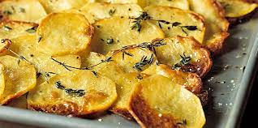

Baking Potatoes
Are you feeling hungry? Don't have the energy to cook something? Baking potatoes is both easy and there is no argue how delicious are the potatoes in any form
It is time to learn the essentials of baked potatoes. Let's bake the them thing
- Peel those fine potatoes and wash them
- Slice them like those Ruffle's chips
- Put the slices in a bowl
- Add oil, salt, black pepper, oregon, garlic powder and a pinch of cumin
- Spread your seasoned slices on an oven tray and bake them for 20mins in 200 degrees
- Go get a beer to drink on the side and chill
